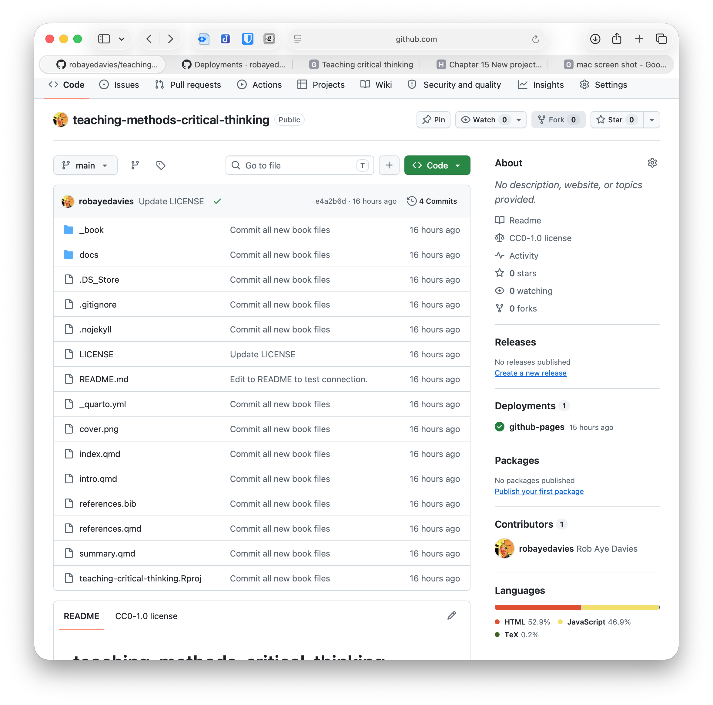
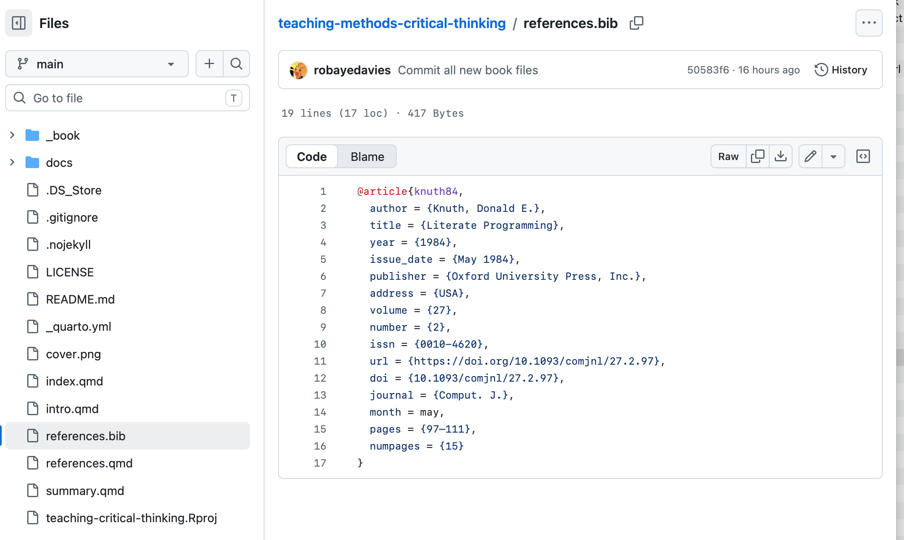
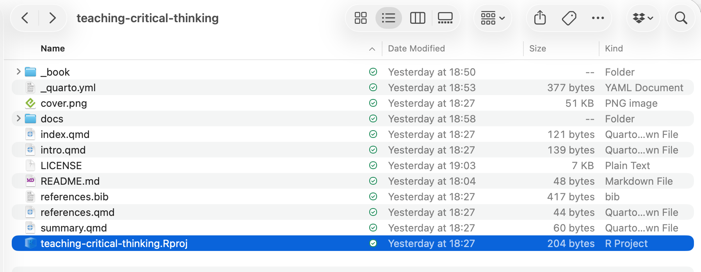

12 Quarto workflow overview
12.1 The typical workflow: locating where you work
Mostly, we would expect to work to write or to make edits to content for a book like this book in the following workflow.
- We could but we typically will not make edits to files in the repository through GitHub. Notice that the repository view shows us the files in the repository folder.

If you click on the files e.g. the references.bib file then you can see the file contents and a pencil at the top of the file view window. If you clicked on the pencil, you could edit the file contents directly through the GitHub web interface.

- We are not going to do that.
Most of the time, I would expect us to work locally (on our computer):
- with the contents of the local hard drive folder version of our project folder;
- writing, or making edits, to those contents or to new content elements in the R-Studio IDE (or the new Positron IDE);
- and ultimately pushing those local changes from our computer up to the remote repository.
In any working session, then, we would begin by opening the project folder by clicking on it in our file folder window (Finder in Macs). Here, that means clicking on the teaching-critical-thinking.Rproj file name.

In whatever project you are working on, the workflow to this point will ensure you have an .Rproj folder file to work with at the top level of the folder.
- Things are changing but generally a project oriented workflow is the recommended practice:
https://tidyverse.org/blog/2017/12/workflow-vs-script/
- See this information on the New Folder from Template workflow in Positron (this is a place-holder for thinking about this workflow):
12.2 The typical workflow: thinking about the sequence of actions
Typically, you may proceed as follows: we assume that we are working in RStudio, in the context of the .Rproj folder for the project.
- I may sensibly begin in the Git window in RStudio (RStudio/Git) by clicking on Pull to check if any changes have been made to the project following my last action, and to pull down those changes from the remote repository to my local version of the repository.
- I create a file or edit a file.
- I save the changes.
- I commit and push the changes from my local to the remote repository.
- Maybe I’ll preview the results of the changes.
- I cycle through these changes until I am ready to render.
- I render.
- I push the changed or new files resulting from the render process.
12.3 Creating or editing content
We can think about creating or editing content in terms of multiple aspects. We can distinguish these aspects though we may not always be working on all of them:
- Structure – working with parts, chapters, sections, blocks, divs and spans;
- Content – text, images, computation inline or in code chunks;
- Cross-references – to other book parts, to chapters, and to sections, figures, tables, files and other resources, and links to external webpages.
Information on book structure is here:
https://quarto.org/docs/books/book-structure.html
Information on working with markdown in Quarto to create or edit content is here:
https://quarto.org/docs/authoring/markdown-basics.html#sec-divs-and-spans
Information on working with R is here:
https://quarto.org/docs/computations/r.html
Information on cross-references is here: